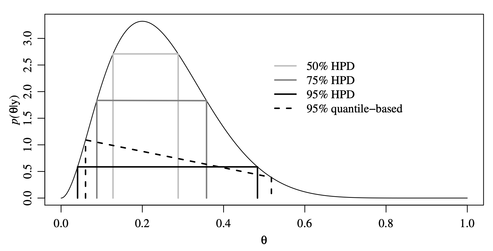

Priors, Posteriors, and PPDs!
Jan 22, 2026
Review of last lecture
On Tuesday, we learned about Stan
A probabilistic programming language for Bayesian inference
We learned about the data, parameter, and model code chunks
We used Stan to fit a Bayesian linear regression
Today, we will dive into priors, posterior summaries, and posterior predictive distributions (PPDs)
Priors
Prior elicitation
Selecting the prior is one of the most important steps in a Bayesian analysis.
There is no “right” way to select a prior.
The choices often depend on the objective of the study and the nature of the data.
Conjugate versus non-conjugate
Informative versus uninformative
Proper versus improper
Subjective versus objective
Conjugate priors
A prior is conjugate if the posterior is a member of the same parametric family.
We have seen that if the response is normal and we use a normal prior on the regression parameter, the posterior is also a normal (if we use an inverse gamma distribution for the variance, the posterior is also inverse gamma).
This requires a pairing of the likelihood and prior.
There is a long list of conjugate priors.
The advantage of a conjugate prior is that the posterior is available in closed form.
No longer critical with Stan!
Informative versus uninformative priors
In some cases informative priors are available.
Potential sources include: literature reviews; pilot studies; expert opinions; etc.
Prior elicitation is the process of converting expert information to prior distribution.
For example, the expert might not comprehend an inverse gamma pdf, but if they give you an estimate and a spread you can back out \(a\) and \(b\).
Informative versus uninformative priors
Strong priors for the parameters of interest can be hard to defend.
Strong priors for nuisance parameters are more common.
For example, say you are doing a Bayesian t-test to study the mean \(\mu\), you might use an informative prior for the nuisance parameter \(\sigma^2\).
Any time informative priors are used you should conduct a sensitivity analysis.
- That is, compare the posterior for several priors.
Informative versus uninformative priors
In most cases prior information is not available and so uninformative priors are used.
Other names: vague, weak, flat, diffuse, etc.
- These all refer to priors with large variance.
Examples: \(\theta \sim Uniform(0, 1)\) or \(\mu ∼ N(0, 1000^2)\)
Uninformative priors can be conjugate or not conjugate.
The idea is that the likelihood overwhelms the prior.
You should verify this with a sensitivity analysis.
Improper priors
Extreme case: \(\mu \sim N(0, \tau^2)\) and we set \(\tau = \infty\).
A “prior” that doesn’t integrate to one is called improper.
Example: \(f(\mu) = 1\) for all \(\mu \in \mathbb{R}\).
It’s OK to use an improper prior so long as you verify that the posterior integrates to one.
For example, in linear regression an improper prior can be used for the slopes as long as the number of observations exceeds the number of covariates and there are no redundant predictors.
Subjective versus objective priors
A subjective Bayesian picks a prior that corresponds to their current state of knowledge before collecting data.
Of course, if the reader does not share this prior then they might not accept the analysis, and so sensitivity analysis is common.
An objective analysis is one that requires no subjective decisions by the analyst.
Subjective decisions include picking the likelihood, treatment of outliers, transformations, … and prior specification.
A completely objective analysis may be feasible in tightly controlled experiments, but is impossible in many analyses.
Objective Bayes
An objective Bayesian attempts to replace the subjective choice of prior with an algorithm that determines the prior.
There are many approaches: Jeffreys, reference, probability matching, maximum entropy, empirical Bayes, penalized complexity, etc.
Jeffreys priors are the most common: \(f(\boldsymbol{\theta}) \propto \sqrt{\det[I(\boldsymbol{\theta})]}\), where \(I(\boldsymbol{\theta})_{ij} = \mathbb{E}\left[\frac{f(\mathbf{Y}|\boldsymbol{\theta})}{\partial \theta_i}\frac{f(\mathbf{Y}|\boldsymbol{\theta})}{\partial \theta_j}\right]\) is the Fisher Information matrix.
Many of these priors are improper and so you have to check that the posterior is proper.
Hyperpriors
Prior is the name for the distribution of model parameters that show up in the likelihood.
- For example: In linear regression, \(\boldsymbol{\beta}\) and \(\sigma^2\) are parameters in the likelihood, thus \(f(\boldsymbol{\beta})\) and \(f(\sigma^2)\) are called priors.
Hyperprior is the name for the distribution of model parameters not in the likelihood.
Hyperparameter is the name for the parameters in a hyperprior.
Hyperpriors
For example: Suppose in linear regression, we place the following prior for \(\boldsymbol{\beta}\), \(f(\boldsymbol{\beta} | \boldsymbol{\beta}_0, \sigma_{\beta}^2) = N(\boldsymbol{\beta}_0,\sigma_{\beta}^2 \mathbf{I})\) and
\(f(\boldsymbol{\beta}_0) = N(\mathbf{0}, \mathbf{I})\)
\(f(\sigma_{\beta}^2) = IG(a_{\beta}, b_{\beta})\)
\(f(\boldsymbol{\beta}_0)\) and \(f(\sigma_{\beta}^2)\) are hyperpriors.
\(a_{\beta}, b_{\beta}\) are hyperparameters.
Question: Why would a researcher be interested in a hyperprior?
Prior predictive checks
- Use the prior distribution to obtain samples of the data, \(\mathbf{Y}\).
\[\begin{aligned} f(\mathbf{Y}) &= \int f(\mathbf{Y}, \boldsymbol{\theta}) d\boldsymbol{\theta}\\ &= \int f(\mathbf{Y} | \boldsymbol{\theta})f(\boldsymbol{\theta}) d\boldsymbol{\theta} \end{aligned}\]
This is easy to sample from using the following steps, 1. \(\boldsymbol{\theta}^{sim} \sim f(\boldsymbol{\theta})\) and 2. \(\mathbf{Y}^{sim} \sim f(\mathbf{Y} | \boldsymbol{\theta}^{sim})\).
Similar to Gibbs sampling, this gives a sample from the joint \((\mathbf{Y}^{sim}, \boldsymbol{\theta}^{sim})\) and also the marginal \(\mathbf{Y}^{sim}\).
Prior predictive checks
Suppose that I am interested in modeling the number of patients who are in the waiting room during an hour in the Duke ED, \(Y_i\).
We can model this random variable as \(Y_i \stackrel{iid}{\sim}Poisson(\lambda)\) for \(i = 1,\ldots,n\). A conjugate prior for \(\lambda\) is \(\lambda \sim Gamma(a,b)\).
We know from experience that on average there are 20 patients waiting during an hour, so we want \(\mathbb{E}[Y_i]=\lambda = 20\).
Thus, we place a prior on \(\lambda\) that is centered at 20, which requires that \(a/b=20\).
There are infinitely many priors specifications.
Prior predictive checks
- Prior predictive checks can be used to determine a realistic specification for \(a\) and \(b\).
- When running Stan for prior predictive checks you must specify
algorithm = "Fixed_param"
Visualizing prior predictive checks

- We can use the samples of \(Y_i\) under different prior specifications to compute a summary statstic, for example for the maximum value.
Posterior summaries
Posterior summaries: point estimates
The output of Bayesian inference is a probability distribution. It is often convenient to summarize the posterior in various ways.
Usually summaries are computed for individual parameters using the marginal distributions,
\[f(\theta_i|\mathbf{Y}) = \int f(\boldsymbol{\theta} | \mathbf{Y}) d\boldsymbol{\theta}_{-i}.\]
- The posterior mean is defined by,
\[\int_{-\infty}^{\infty}\theta_i f(\theta_i|\mathbf{Y}) d\theta_i.\]
Posterior summaries: point estimates
- The posterior median m is defined by,
\[\int_{-\infty}^{m} f(\theta_i|\mathbf{Y}) d\theta_i = 0.5 = \int_m^{\infty} f(\theta_i|\mathbf{Y}) d\theta_i.\]
- The posterior mode is given by,
\[M=\text{argmax} f(\theta_i|\mathbf{Y}) \]
- The mean and mode are also well defined for the joint posterior distribution.
Posterior summaries: intervals
The Bayesian analogue of a frequentist confidence interval is a credible interval.
An interval \((a,b)\) is a \(100(1-\alpha)\%\) posterior credible interval for \(\theta_i\) if
\[\int_a^b f(\theta_i|\mathbf{Y}) d\theta_i = (1-\alpha),\quad 0\leq \alpha \leq 1.\]
- A credible region can be defined similarly for a joint distribution.
Posterior summaries: intervals
Credible intervals are not unique. The two most common are symmetric and highest posterior density (HPD).
- Symmetric: An interval \((a,b)\) is a symmetric \(100(1-\alpha)\%\) credible interval if,
\[\int_{-\infty}^a f(\theta_i|\mathbf{Y}) d\theta_i = \frac{\alpha}{2} = \int_b^{\infty} f(\theta_i|\mathbf{Y}) d\theta_i.\]
Highest posterior density (HPD): An interval \((a,b)\) is a \(100(1-\alpha)\%\) HPD interval if,
\([a,b]\) is a \(100(1-\alpha)\%\) credible interval for \(\theta_i\)
For all \(\theta_i \in [a,b]\) and \(\theta_i^* \notin [a,b]\), \(f(\theta_i|\mathbf{Y}) \geq f(\theta_i^*|\mathbf{Y})\)
Posterior summaries: HPD credible interval

Posterior summaries: HPD credible interval

Posterior summaries: probability
We may be interested in a hypothesis test: \(H_0: \theta \leq c\) versus \(H_1: \theta \geq c\)
We can report the posterior probability of the null hypothesis
- \(P(\theta \leq c | \mathbf{Y}) = \mathbb{E}[1(\theta \leq c) | \mathbf{Y}]\)
Interpretation of the posteriour probability:
- Probability that the null is true \(P(\theta \leq c | \mathbf{Y})\)
Interpretation of the p-value:
Probability of observing a test-statistic as or more extreme given that the null is true
Evidence for or against the null (reject or fail to reject)
Posterior summaries: estimation
We have already seen that we can use MC or MCMC to estimate these posterior summaries!
To compute the HPD interval we can use the
hdifunction from theggdistR package
Posterior predictive distribution (PPD)
Linear regression recall
Assume we observe \((Y_i,\mathbf{x}_i)\) for \(i = 1,\ldots,n\), where \[Y_i|\boldsymbol{\beta},\sigma^2 \sim N(\mathbf{x}_i \boldsymbol{\beta}, \sigma^2).\]
The full data likelihood is given by, \[f(\mathbf{Y} | \boldsymbol{\beta},\sigma^2) = \prod_{i=1}^n f(Y_i|\boldsymbol{\beta},\sigma^2),\] where \(\mathbf{Y} = (Y_1,\ldots,Y_n)\).
We have parameters \(\boldsymbol{\theta} = (\boldsymbol{\beta}^\top,\sigma^2)\) and \(f(\boldsymbol{\theta}) = f(\boldsymbol{\beta})f(\sigma^2)\).
Posterior predictive distribution: definition
Assume we observe a new \(\mathbf{x}'\) and we would like to make some type of prediction about \(Y'\) given the data we have already observed, \(\mathbf{Y}\).
The posterior predictive distribution is defined as \(f(Y'|\mathbf{Y})\) and can be written as, \[\begin{aligned} f(Y' | \mathbf{Y}) &= \int f(Y' , \boldsymbol{\theta} | \mathbf{Y}) d\boldsymbol{\theta},\quad\text{(marginal)}\\ &= \int f(Y' | \boldsymbol{\theta},\mathbf{Y}) f(\boldsymbol{\theta} | \mathbf{Y})d\boldsymbol{\theta},\quad\text{(conditional)}\\ &= \int \underbrace{f(Y' | \boldsymbol{\theta})}_{likelihood} \underbrace{f(\boldsymbol{\theta} | \mathbf{Y})}_{posterior}d\boldsymbol{\theta}.\quad\text{(independence)} \end{aligned}\]
Posterior predictive distribution: estimation
- The PPD can be written as an expectation,
\[f(Y' | \mathbf{Y}) = \int f(Y' | \boldsymbol{\theta}) f(\boldsymbol{\theta} | \mathbf{Y})d\boldsymbol{\theta} = \mathbb{E}_{\boldsymbol{\theta} | \mathbf{Y}}\left[f(Y' | \boldsymbol{\theta})\right].\]
- Thus, we can estimate the PPD using a Monte Carlo estimate,
\[\mathbb{E}_{\boldsymbol{\theta} | \mathbf{Y}}\left[f(Y' | \boldsymbol{\theta})\right] \approx \frac{1}{S} \sum_{s = 1}^S f\left(Y' | \boldsymbol{\theta}^{(s)}\right),\]
where \(\left\{\boldsymbol{\theta}^{(1)},\ldots,\boldsymbol{\theta}^{(S)}\right\}\) are samples from the posterior.
Posterior predictive distribution: Stan
We want to compute the posterior predictive distribution.
Use generated quantities block.
Posterior predictive distribution: Stan
The function normal_rng generates a single independent sample from a normal distribution with parameters:
mean = X[i, ] * beta, wherebetais a sample from the estimated posterior.sd = sigma, wheresigmais a sample from the estimated posterior.
This computes the posterior predictive distribution for the original data.
Posterior predictive distribution: Stan
The following additions are added to the linear regression Stan code.
// saved in linear_regression_ppd.stan
data {
...
int<lower = 1> n_pred; // number of new observations
matrix[n_pred, p + 1] X_pred; // covariate matrix for new observations
}
generated quantities {
vector[n] in_sample;
vector[n_pred] out_sample;
for (i in 1:n) {
in_sample[i] = normal_rng(X[i, ] * beta, sigma);
}
for (i in 1:n_pred) {
out_sample[i] = normal_rng(X_pred[i, ] * beta, sigma);
}
}Let’s simulate some data again
###True parameters
sigma <- 1.5 # true measurement error
beta <- matrix(c(-1.5, 3), ncol = 1) # true beta
###Simulation settings
n <- 100 # number of observations
p <- length(beta) - 1 # number of covariates
n_pred <- 10
###Simulate data
set.seed(54) # set seed
X <- cbind(1, matrix(rnorm(n * p), ncol = p))
Y <- as.numeric(X %*% beta + rnorm(n, 0, sigma))
X_pred <- cbind(1, matrix(rnorm(n_pred * p), ncol = p))
Y_pred <- as.numeric(X_pred %*% beta + rnorm(n_pred, 0, sigma))Fit linear regression using Stan
###Load packages
library(rstan)
###Create stan data object
stan_data <- list(n = n, p = p, Y = Y, X = X,
beta0 = 0, sigma_beta = 10, a = 3, b = 1,
n_pred = n_pred, X_pred = X_pred)
###Compile model separately
stan_model <- stan_model(file = "linear_regression_ppd.stan")
###Run model and save
fit <- sampling(stan_model, data = stan_data,
chains = 4, iter = 1000)
saveRDS(fit, file = "linear_regression_ppd_fit.rds")Examining prediction performance
$in_sample
[1] 2000 100
$out_sample
[1] 2000 10
Prepare for next class
Work on HW 01 which is due next Thursday before class
Complete reading to prepare for next Tuesday’s lecture
Tuesday’s lecture: Model checking